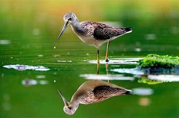
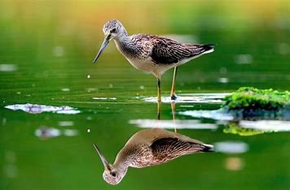

THIS IS ABOUT HTML
MALLESWARI
DHANEKULA INSTITUTE OF ENGINEERING AND TECHNOLOGY
218T1A05E6
William Shakespeare (bapt. 26 April 1564 – 23 April 1616) was an English playwright, poet and actor. He is widely regarded as the greatest writer in the English language and the world's pre-eminent dramatist. He is often called England's national poet and the "Bard of Avon" (or simply "the Bard").William Shakespeare (bapt. 26 April 1564 – 23 April 1616) was an English playwright, poet and actor. He is widely regarded as the greatest writer in the English language and the world's pre-eminent dramatist. He is often called England's national poet and the "Bard of Avon" (or simply "the Bard").William Shakespeare (bapt. 26 April 1564 – 23 April 1616) was an English playwright, poet and actor. He is widely regarded as the greatest writer in the English language and the world's pre-eminent dramatist. He is often called England's national poet and the "Bard of Avon" (or simply "the Bard").William Shakespeare (bapt. 26 April 1564 – 23 April 1616) was an English playwright, poet and actor. He is widely regarded as the greatest writer in the English language and the world's pre-eminent dramatist. He is often called England's national poet and the "Bard of Avon" (or simply "the Bard").William Shakespeare (bapt. 26 April 1564 – 23 April 1616) was an English playwright, poet and actor. He is widely regarded as the greatest writer in the English language and the world's pre-eminent dramatist. He is often called England's national poet and the "Bard of Avon" (or simply "the Bard")


 
